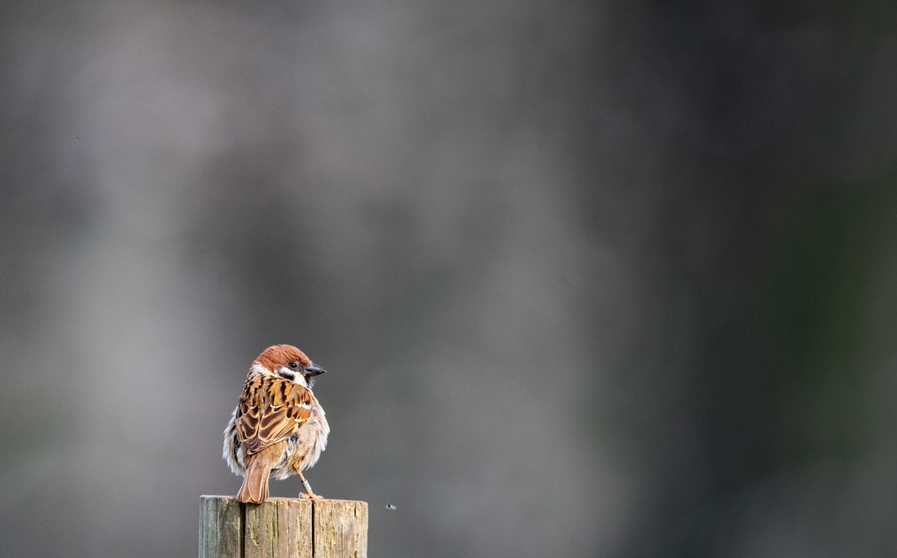

ANIMAl PLACE
- 펭귄
- 오구리
- 참새
- 북극곰
- 반달곰
- 판다
About

인간의 친구 참새
우리 주변에서 볼 수 있는 정말 귀여운 참새, 참새에게는 우리가 미처 몰랐던 비밀이 있다
'참새는 사실 사람을 이용하고있다 ?'
참새는 다른 야생동물과 달리 민가 근처에 서식하는데 다 이유가 있다고 합니다. 일반적으로 야생동물은 인간 주변에 살기를 싫어하지만, 참새의 경우에는 사람의 곁을 떠나서는 살 수가 없다. 사람이 참새의 천적을 커버해주는 역할을 하기 때문이다. 즉, 참새의 천적인 뱀, 족제비, 매와 같은 동물이 사람을 무서워하기 때문에 사람을 방패처럼 이용한다.
이런 귀여운 녀석들